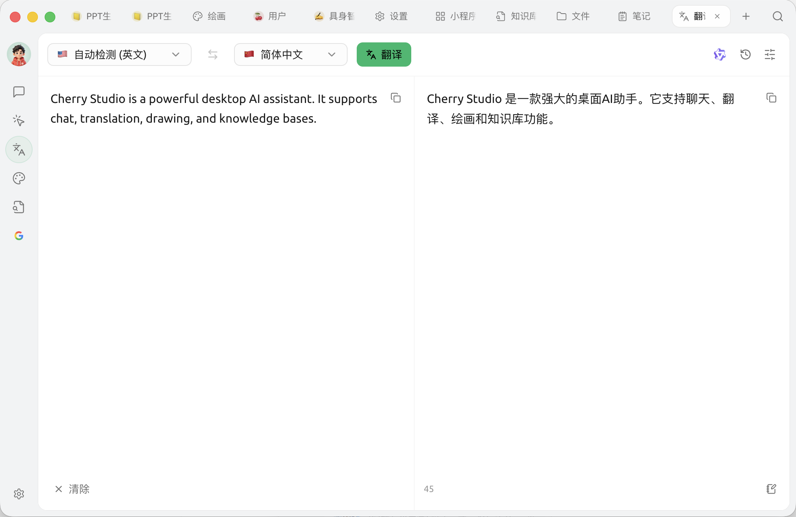
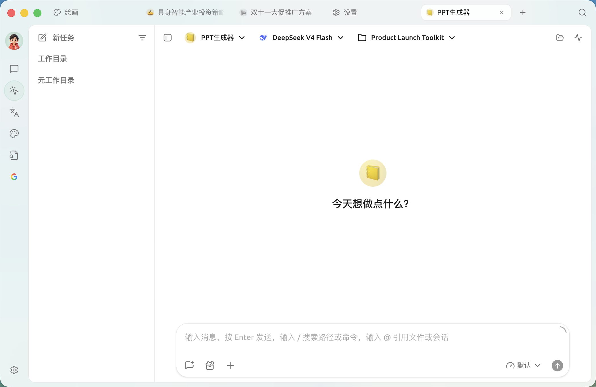

Cherry Studio 深度盘点：从本地模型到 Agent 工作流，它把 AI 桌面端的每个环节都铺了一遍
Cherry Studio 做的事不是再写一个 AI 对话客户端——它把模型聚合、文件翻译、Agent 拆解、跨端接力这几条 AI 桌面工作流的核心链路全部打通了。我们从能力域出发，逐项盘点它到底解决了哪些真问题，又在哪些地方留着明显的短板。
在 AI 桌面端这个赛道里，Cherry Studio 不是第一个，但它的官网定位很清楚——少数几个把「一个软件覆盖多条 AI 工作流」这件事做完整的。很多同类产品要么只做模型对话，要么只做翻译工具，要么只做 Agent 框架——用户要完成一件像样的事，往往得在三四个软件之间来回跳。Cherry Studio 的思路很直接：把模型接入、文件处理、Agent 执行、跨端同步这几条线揉进同一个桌面壳子里，让用户的 AI 工作流尽量少切换、少配置。
这篇盘点不是功能清单的重复——我们从实际使用中最能感知的几个能力域出发，看看它每个环节到底提供了什么、亮点在哪、什么场景下真正用得上。
模型聚合：从 Ollama 到自建网关，一次配好全部能用
AI 桌面端的起点永远是「模型从哪来」。Cherry Studio 在这件事上做的是彻底的兼容派——它不只盯着 Ollama 这一条最流行的本地模型路线，而是把 LM Studio、OpenVINO Model Server、New API、vLLM 这些不同方向的方案全部纳入了视野。
这种兼容的价值在于，不同的硬件条件和使用习惯可以各自找到最合适的落点。用 Intel NUC 或酷睿 Ultra 笔记本的用户，OpenVINO Model Server 能让 CPU 上的推理速度比纯 Ollama 跑快三成到五成；不想碰终端命令的新手，LM Studio 那套完整的 GUI 界面和一键下载体验就友好得多；而需要统一管理多家厂商 Key 的团队或开发者，New API 这种自建网关方案在 Cherry Studio 里只需填一个端点地址就能直接接上。更重要的是，这套聚合不是各模型孤岛——日常简单问答用本地模型省钱，复杂推理切云端旗舰追求质量，敏感话题留在本地不出设备，Cherry Studio 的模型下拉面板让这种混搭切换变成了一次点击的事。
文件翻译：拖进去就行，格式不丢
翻译是很多人用 AI 的高频场景，但传统做法极繁琐——打开文档、选中段落、复制粘贴到翻译工具、再复制回去，一份几十页的 PDF 可能要反复这个循环二三十次。Cherry Studio 在翻译页做的改动看起来很小：把文件直接拖进输入框，但它背后解决了一整套链路问题。
支持的格式覆盖了日常办公最常用的：PDF、Word、Excel、PowerPoint、Markdown、TXT，单文件上限 20 MB。Cherry Studio 会自动抽取正文，保留段落结构、表格 sheet、PPT 每页的正文——Markdown 格式更贴心，代码块不翻译只翻注释，链接地址不改动，标题列表表格引用的渲染格式原样保留。翻译结果可以直接右键导出成 Word 文档，不需要再手动排版。

这套体验对长文档的处理也有实用的分层策略：单文件超长时可以分章节拖入，或者把文档放进知识库后在对话里让 AI 利用长上下文检索分章节翻译，再或者直接拖到对话界面开启专用翻译助手——三种路径各有适用边界，用户可以灵活选。
Agent 工作流：拆解、并行、可视化，复杂任务不再是一个黑盒
Agent 可能是 Cherry Studio 最有想象力的能力域了。给它一个「整理去年项目文档并生成年度总结」的目标，它不会一股脑输出一堆文字，而是先理解目标、制定计划、拆成几个子任务、逐步执行，执行中发现缺输入还会自动回头补查。整个拆解过程在右侧面板的「子任务」标签页里实时显示——每个子任务是待执行、执行中、完成还是失败，一眼就能看清。
更值得注意的是子智能体并行机制。当目标涉及多个独立方向时，主 Agent 会同时派多个子智能体并行处理——比如同时整理三个项目的月度报告，子智能体 A、B、C 各管一个，跑完后主 Agent 再汇总生成总览。Cherry Studio 在消息流里会明确标注「子智能体 A 正在执行 XXX」，不会让用户混淆。右侧面板还有状态、文件、消息流四个标签配合使用，开发者模式下能看到完整的工具调用链，对调试 Agent 行为特别有用——这一套面板的完整用法在cherry studio文档里有逐图说明，比自己摸索省时间。

Agent 不是只会埋头跑。如果拆解中卡住或偏离方向，用户随时可以在输入框里补充要求、点具体子任务查看实时状态，或者点「停止」后重新启动一个更明确的版本。这种「人机协作、随时可介入」的设计，让 Agent 从一个黑盒变成了可控的助手。
跨端接力：桌面配好，手机一键接走
很多人忽略 AI 工作流里的一个实际痛点：在电脑上配好了模型和助手、和 AI 讨论完一个方案，出门路上突然有个灵感想继续聊，却发现手机里什么都没配。先从下载页把两端都装上，Cherry Studio 的移动版设计思路不是做缩小的桌面端，而是桌面工作流的随身延伸——首次打开移动版时，有一个「从 Cherry Studio 导入」的入口，桌面端配好的模型服务商、助手列表、MCP 市场开关一键就能导到手机。
移动端的功能做了明确的取舍：对话助手完整保留，Agent 智能体保留核心推理能力但去掉了文件终端执行，MCP 市场完整可用，知识库和绘画翻译做了基础版，而编码搭档这类桌面端专属的重型功能在移动版里直接砍掉。这种取舍很务实——移动端主打快速对话和调用智能体，重型操作留给桌面端，两端不重叠、不强行对等。
需要注意的是目前的同步是单向的：桌面导到移动可以一键完成，移动端的配置改动不会自动回写桌面。对话历史和知识库这类体积大的数据，推荐用 WebDAV 做软同步——桌面和移动指向同一个 WebDAV 账户，各自定期备份和恢复。
短板也要说：不是没有边界
盘点到这里，得客观说几个明显的局限。首先是移动端 Agent 的能力受限，文件读写和终端执行这两个桌面端 Agent 的核心工具在移动版里没有，这意味着复杂的多步任务在手机上是做不完的。其次是大体积数据的同步问题——知识库内容和对话历史默认不同步，手动传也没有统一的云端方案，跨端接力在配置层面很顺，但在数据层面还需要用户自己做 WebDAV 这类软同步。最后是本地模型的硬件门槛：7B 模型在消费级显卡上的首 token 延迟通常 2 到 5 秒，云端旗舰模型能做到 0.5 到 1 秒；本地 70B 模型能追平云端质量但硬件成本很高——纯本地路线对大多数用户来说仍然是一个有明确上限的选择。
什么样的人该用它
把几个能力域放在一起看，Cherry Studio 的定位就很清晰了。
在本地和云端之间频繁切换的 AI 重度用户——Cherry Studio 的模型聚合让本地省钱、云端追求质量的混搭变得零摩擦，不需要为不同模型开不同客户端，也不用自己维护多条 API 密钥。
有大量办公文档翻译需求的职场人或学生——拖文件即翻译、格式保留、可导出 Word，这些体验直接把翻译这件事的摩擦降到了最低，尤其是长文档和 Markdown 技术文档的翻译，传统复制粘贴路线根本没法比。
想尝试 Agent 但又怕黑盒的探索者——右侧面板的实时拆解和子智能体可视化，让 Agent 的思考过程透明可追踪，卡壳了随时可以介入修正，而不是等它跑完后发现完全不对。
Cherry Studio 做的不是再写一个 AI 对话客户端，而是尝试把 AI 桌面工作流的几个核心环节——模型接入、文件处理、Agent 执行、跨端接力——全部打通在同一个壳子里。这个尝试在它覆盖的每条线上都做得足够扎实，也在边界处诚实地留着短板。对想要一套工具撑起大部分 AI 桌面场景的人来说，它值得认真看看。这套资料在三个仓库都能拿到——GitHub主仓库之外，国内用户访问 Gitee 和 GitCode 的镜像通常更快，文档维护也保持着同步更新。